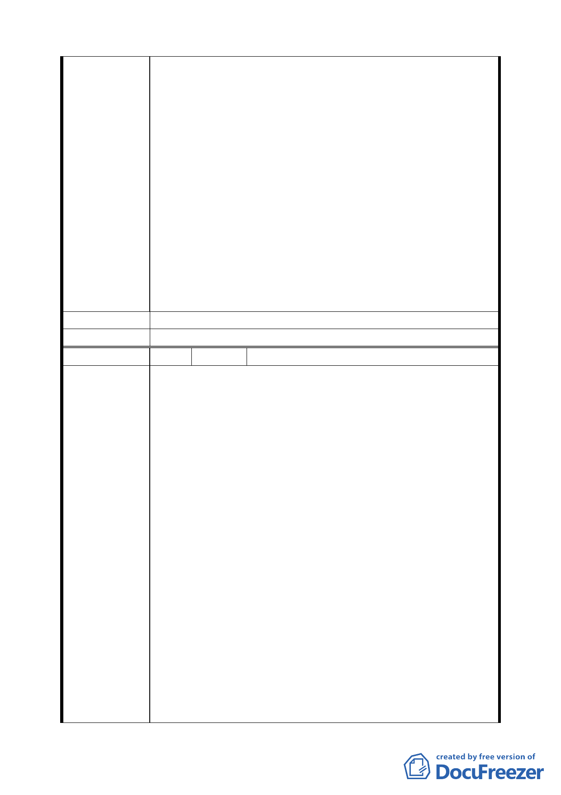

平與片面認定，我的疑點，請書面答覆：
（一）建商與地主之分配比例為 50％：50％，實不合理，
市府應以地主之最大權益與建商談，建議分配比例改
為 60％（地主）：40％（建商）。
（二）本人擁有延平北路東側之店面，若參與合建，開發完
成時，則應取回原地之店面，（坪數之大小依規劃，
只要鄰居們公平分配較無爭議），而不是參與登記抽
籤分配的方式。
（三）是否分配有獎勵停車位，請明確說明。若有分配，其
面積是否含於取回之樓地板面積中？
（四）建物補償金（相當於民間合建中，建商補貼之房屋租
金），與開發案之完成年限有直接關係，請說明自拆
屋改建開始，約幾年完成，若遲延完工，有何種程度
之補償措施？
（五）若參與合建，土徵稅是否繳納？
建 議 辦 法 （同上）
委 員 會 決 議 同編號 1。
編 號 48 陳情人 張義邦（延平北路三段 11 號）
一、都市更新能有效促進區域發展，這大家都認同，但若因
都市更新反造成市民財產損失，相信大家都不會願意。
我家本來擁有延平北路東側一樓店面，依台北市台北都
會區大眾捷運系統開發所需土地協議價購優惠辦法第
五條提及，原一樓建物之所有人可優先選定樓層/區
位，相同者以抽籤決定，此舉對靠近馬路的店家，未免
過於不公吧！店面所有權人，於土地開發完成時，難道
不應該比非店面者有絕對優先權去取回當初位於一樓
之店面嗎？若真要抽籤，也應由店家抽完新店面後，其
他店面再由其他戶抽，不是嗎？否則，原店家有什麼理
陳情理由
由要冒可能失去店面財產的風險去參與不公的土地開
發案！
二、對於更新後之停車位將如何安排？其面積是否含在取回
之樓地板面積中？
三、廠商與地主劃分比率為 50％：50％，實不合理。目前
業界之劃分比率為廠商 40％，地主 60％，善於言詞者，
甚可談至廠商 30％，地主 70％，況且此土地開發案又
有容積獎勵等，且其分配方式是等市府取回應得後，其
餘再由雙方劃分，市府絕對不吃虧，但對雙方劃分 50
％：50％，市府似乎有圖利廠商之嫌，市府既以徵收方
式向地主取得土地，即應以地主之最大權益與廠商談，
一八